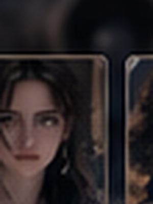
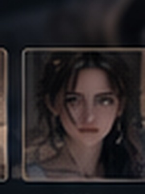
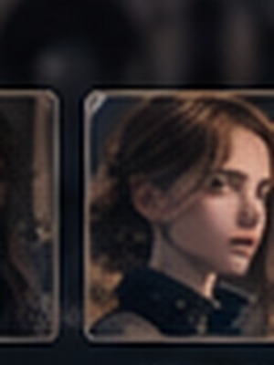

✦ Aetherium
🔎 0
AETHERIUM ACADEMY3 SPELERS± 2 UUR
De Nacht van de Holle Ster
Een interactieve fantasy-whodunnit voor Florine, Margot en Selena. Jullie bepalen zelf wat jullie zeggen, onderzoeken en delen.
Jullie in Aetherium
Alternate-universe versies van jullie drie. De site schrijft nooit gesprekken voor namens jullie.
 Florine — Echo Sight
Florine — Echo SightZorgzaam, koppig en creatief. Felix, een zilveren konijnencharme, verankert haar visioenen.
DivinationBlauwOkido
 Margot — Mythic Lore
Margot — Mythic LoreNerdy, betrokken en zorgzaam. Maan-, pijl- en wolfsymboliek duikt overal in haar spullen op.
LoreArtemisFair
 Selena — Verdant Sense
Selena — Verdant SenseCreatief, koppig en eerlijk. Haar jackalope-familiar reageert op plantenmagie en vreemde geuren.
HerbologyJackalopeHoe dan ook...
Onderzoek de klas
Iedereen heeft iets te verbergen. Jullie mogen drie personen uitgebreid spreken.
Gesproken: 0/3. Een leugen is geen automatisch moordbewijs.
Brutaal, charmant, en niet altijd waarheidsgetrouw.

Kent de archieven beter dan wie ook.
Warm, praktisch en opvallend discreet.
Droge humor en toegang tot materiaal.

Beheert wards, toegang en disciplinaire logs.

Briljant, gereserveerd, en niet volledig open.